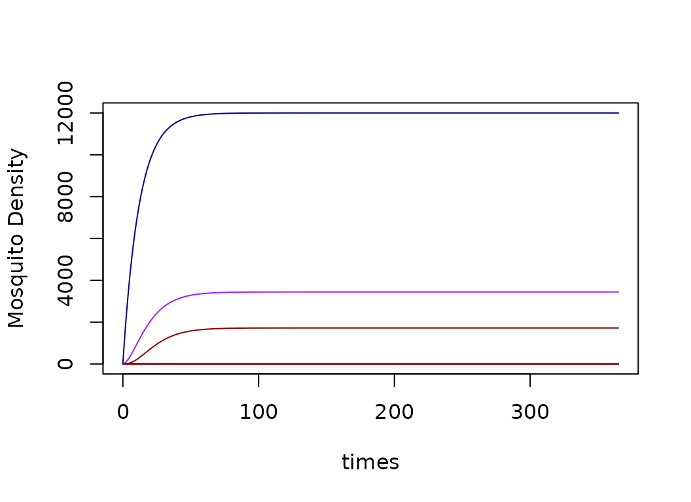
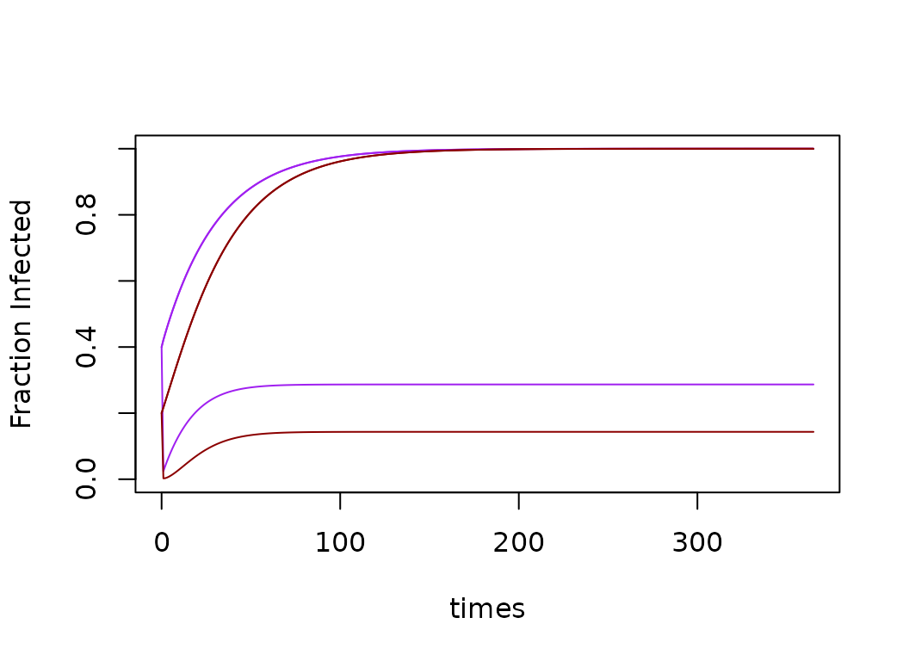

vignettes/MYZ-xde-RMG.Rmd
MYZ-xde-RMG.RmdMost of the models developed to model malaria parasite infections in mosquitoes look at the infection states: uninfected; infected; or infected and infectious. A few models have been developed that track also track parity. A different class of models tracks the behavioral / physiological state of mosquitoes, so we call them behavioral state models. A model with both infection states and behavioral states was first published by Le Menach, et al. (2005)1.
This is a patch-based model with patches, and we assume that all the parameters, variables, and terms are of length except for and , which are matrices.
- uninfected, blood feeding mosquitoes
- uninfected, egg laying mosquitoes
- infected but not infective, blood feeding mosquitoes
- infected but not infective, egg laying mosquitoes
- infective, blood feeding mosquitoes
- infective, egg laying mosquitoes
Two terms are passed from another component of the model.
- the emergence rate of adult mosquitoes from aquatic habitats in each patch
- the net infectiousness of humans, the probability a mosquito becomes infected after blood feeding on a human
Bionomics - Each one of the following parameters can take on a unique value in each patch.
- the blood feeding rate
- the human blood feeding fraction
- the egg laying rate
- the mosquito death rate, per mosquito
- the rate that infected mosquitoes become infective, the inverse of the EIP
- the patch emigration rate for blood-feeding mosquitoes
- the patch emigration rate for egg-laying mosquitoes
- the emigration loss rate: excess mortality associated with migration
Dipsersal Matrices - Each one of the following parameters can take on a unique value in each patch.
${\cal K}_b$ - the dispersal matrix for blood-feeding mosquitoes, which has the form: $${\cal K} = \left[ \begin{array}{ccccl} 0 & k_{1,2} & k_{1,3} & \ldots & k_{1,p} \\ k_{2,1} & 0 & k_{2,3} & \ldots & k_{2,p} \\ k_{3,1} & k_{3,2} & 0 & \ldots & k_{3,p} \\ \vdots& \vdots &\vdots & \ddots & k_{p-1, p} \\ k_{p,1} & k_{p,2} & k_{p,3} & \ldots & 0 \\ \end{array} \right].$$ The diagonal elements are all , and other elements, $k_{i,j} \in {\cal K}$, are the fraction of blood feeding mosquitoes leaving patch that end up in patch ; the notation should be read as , or to from . Notably, the form of $\cal K$ is constrained such that
${\cal K}_q$ - the dispersal matrix for egg-laying mosquitoes, which has the same form as ${\cal K}_b$
The Demographic Matrices
- the demographic matrix for blood feeding mosquitoes; letting denote the identity matrix, $$\Omega_b = \mbox{diag}\left(g\right) - \mbox{diag}\left(\sigma_b\right) \left(\mbox{diag}\left(1-\mu\right) - \cal K_b \right)$$
- the demographic matrix for egg laying mosquitoes; which has the same form as .
The xds_setup() utilities allow the user to pass a
single version of the dispersal matrix K_matrix. During
xds_setup(), Omega_b and Omega_q
are identical.
HPop = rep(1000, 3)
residence = c(1:3)
model <- xds_setup(MYname="RMG", Lname="trivial", Xname = "trivial", residence=residence, HPop =HPop, nPatches=3)
model <- xds_solve(model)
xds_plot_M(model)
xds_plot_Y(model, add = T)
xds_plot_Z(model, add = T)
xds_plot_Y_fracs(model)
xds_plot_Z_fracs(model, add=T)
Menach AL, et al. The unexpected importance of mosquito oviposition behaviour for malaria: non-productive larval habitats can be sources for malaria transmission. Malar J 4, 23 (2005). https://doi.org/10.1186/1475-2875-4-23↩︎